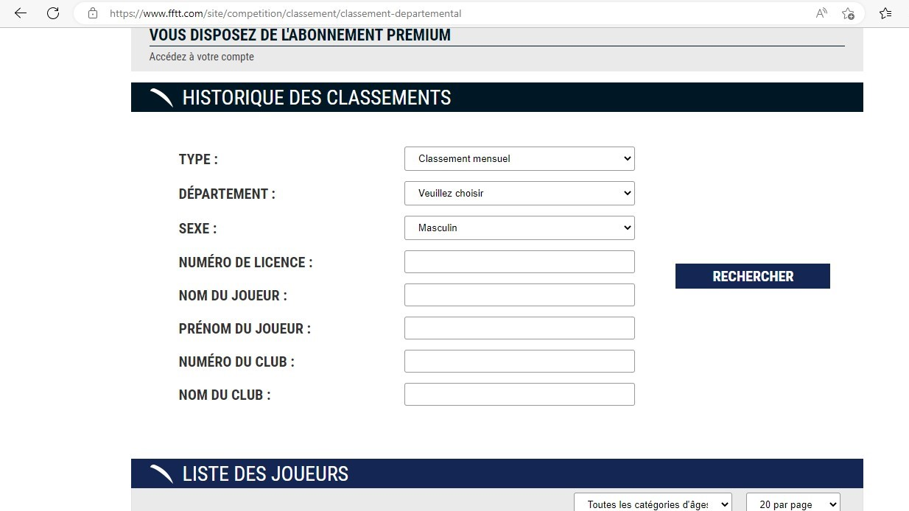

Voici un site web pour voir les actualités compétitives des joueurs du monde entier voire même de certains joueurs pouvant jouer dans votre département.
https://www.fftt.com/site .
Pour vous repérer dans (ce qui doit être pour vous) un labyrinthe, je vous donne les clés pour retrouver une personne que vous connaissez. Je vous mets aussi des images pour que vous puissiez comprendre les étapes une à une.
Voici plusieurs astuces :
--> Première astuce : Rechercher les informations du joueur dont vous en possédez. Voir images ci-dessous.
- Au départ il faut tout d'abord aller sur le site puis placez le curseur sur la case COMPETITIONS.
- Après avoir fait cela, vous avez juste à cliquer sur l'onglet CLASSEMENT DEPARTEMENTAL.
- Vous venez de cliquer alors sur l'onglet Classement Départemental et vous allez descendre environ au milieu de la page et renseigner la totalité des informations que vous
possédez de votre proche. Une fois que vous avez terminé ceci, il ne vous manque plus qu'à appuyer sur le bouton RECHERCHER.

--> Deuxième astuce : Si vous connaissez le nom du club dans lequel il joue, vous pouvez écrire celui-ci et trouver la liste de la totalité des joueurs (licenciés en compétition) inscrits sur cette page.